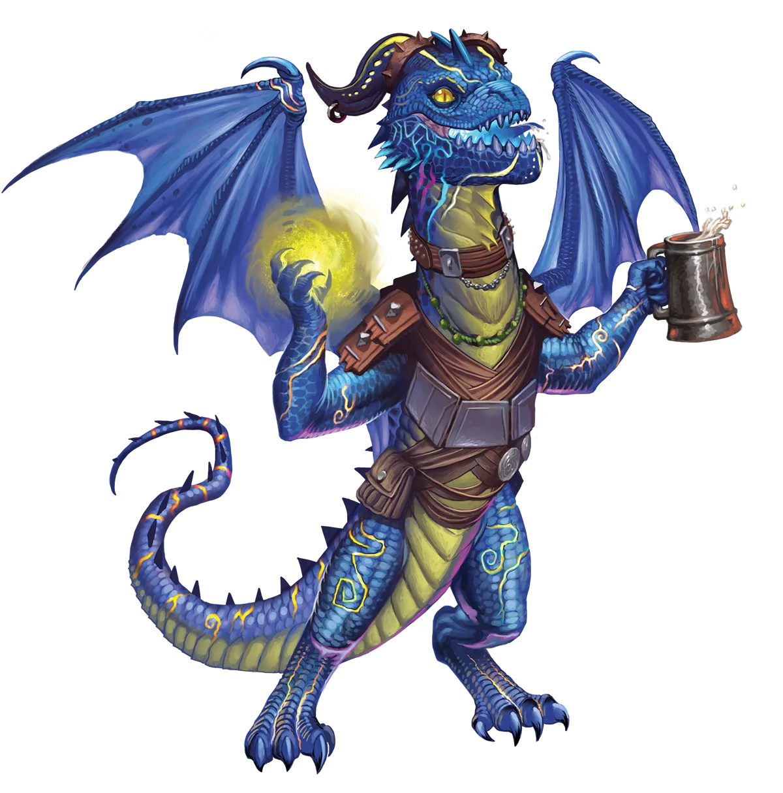

派对的生命
靛青龙以极度热爱派对而闻名，但他们并非仅仅将派对视为有空时随便参加的休闲活动。靛青龙对待派对十分认真。无论走到哪里，他们都尽情狂欢，但并不会为了短暂的享乐而扰乱派对。相反，他们会为了整场派对更盛大的欢愉而努力，创造奇观来助长派对的热烈气氛，使其取得巨大成功。如果靛青龙亲自举办派对，你若是个爱热闹的人，就知道这场派对不容错过。我更喜欢一本安静的书。
靛青龙 Indigo Dragon |
|
|
靛青龙是派对的生命与灵魂，他们努力工作，但随后也会尽情狂欢，庆祝自己的成功。因此，即便是传统派的靛青龙也能轻松融入类人定居点，成为友好、乐于助人，但有时又喧闹的邻居。在定居点中，凡是靛青龙聚居的街区或区域，每隔几天就会有某种节庆活动，因此这里是想要享受特别场合的游客们的完美度假胜地。这一点，加上靛青龙对本地产品的消耗，使他们对经济大有裨益……如果你能忍受随之而来的噪音和盛况。永恒派靛青龙很难与他们的传统派同胞区分开来。他们继续过着快节奏、高强度、充满欢乐的生活，白天充满惊险刺激的冒险，夜晚则用狂野的庆祝来欢庆胜利。由于他们观点相似，即便走向不同的方向，永恒派和传统派靛青龙也能相处得极为融洽。他们积极尝试组建包含两种类型龙类的朋友圈，以体验更丰富多彩的派对和视角。虽然其他种族甚至难以分辨永恒派和传统派靛青龙的区别，但靛青龙们自己却没有这种困扰，并且自豪地庆祝他们之间的差异。 永恒派靛青龙可能有一群传统派的伙伴，喜欢和他们一起闲逛、举办派对，但他们明白，在冒险和通过永恒之光仪式来充实自己这件事上，他们需要另寻志同道合的伙伴。他们常因一群冒险者被称为“冒险队伍”而感到高兴，尽管他们有点小失望，因为冒险队伍并非某种巨大的派对。尽管如此，只要在冒险之后有充足的时间发泄放松、尽情庆祝，永恒派靛青龙在冒险过程中也会是勤奋的工作者。他们会试图把整个团队都拉入自己的狂欢和纵情派对中，即使是那些更内向或沉默寡言的冒险伙伴也不例外。然而，他们拥有足够的社交警觉，能够区分一个真正被不断的邀请和社交压力所冒犯和困扰的同伴，与一个只是沉默寡言、勉强应付，但一旦放松下来加入其中最终也能乐在其中的同伴。如果盟友真的讨厌派对，永恒派靛青龙会带着不情愿和悲伤停止尝试引诱他们，但如果他们真的厌恶，靛青龙便会放弃。虽然他们是极其随和的伙伴，几乎能和任何团队相处融洽，但在一个完全由极度严肃、屡次拒绝庆祝和社交的冒险者组成的冒险队伍中，靛青龙是无法长久待下去的。这并非因为靛青龙不能保持专业精神，转头去和别人开派对；更多的是因为他们不想与一群无法分享自己其它方面的人分享他们激动人心的冒险经历。永恒派靛青龙偏爱吟游诗人和游荡者这类富有魅力且充满活力的职业。 派对的生命 靛青龙以极度热爱派对而闻名，但他们并非仅仅将派对视为有空时随便参加的休闲活动。靛青龙对待派对十分认真。无论走到哪里，他们都尽情狂欢，但并不会为了短暂的享乐而扰乱派对。相反，他们会为了整场派对更盛大的欢愉而努力，创造奇观来助长派对的热烈气氛，使其取得巨大成功。如果靛青龙亲自举办派对，你若是个爱热闹的人，就知道这场派对不容错过。我更喜欢一本安静的书。 靛青龙特质 Indigo Dragon Traits 你出身于一脉崇尚自由、酷爱欢宴的靛青龙世系。 血统关联龙之馈赠：你也在那场派对上吧？、狂喜盛会、乘兴余韵、派对不速客、欢庆喝彩 |
  |